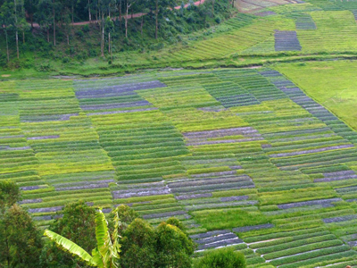
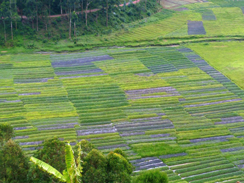

Our Mission
At the International Crane Foundation (ICF) in Rugera, we are dedicated to the conservation of cranes and their ecosystems. Our work involves research, community engagement, and advocacy to ensure that these majestic birds can thrive in their natural habitats.
 
